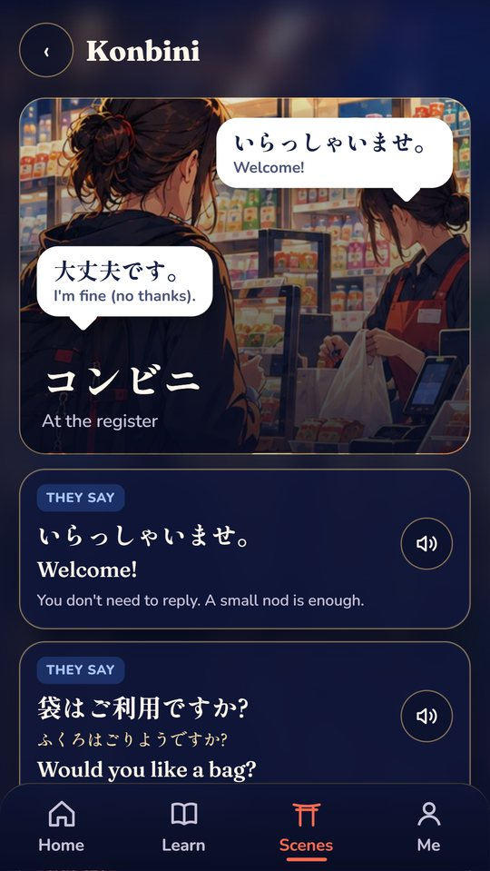
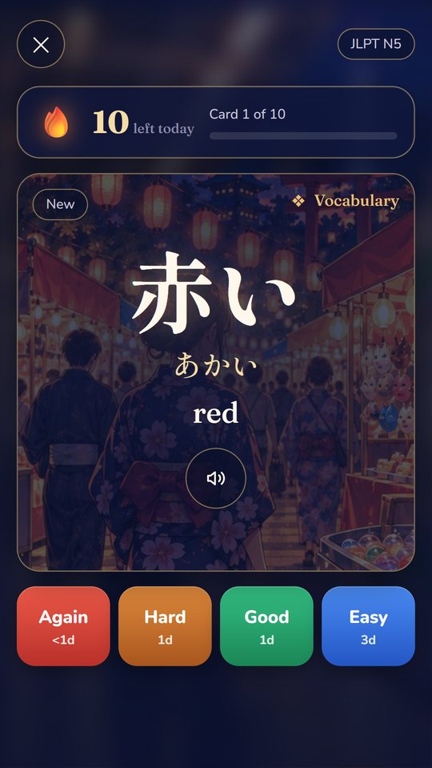
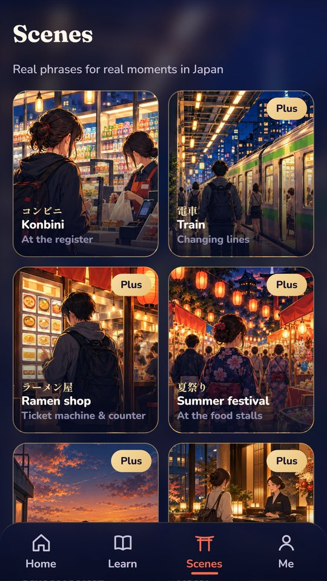
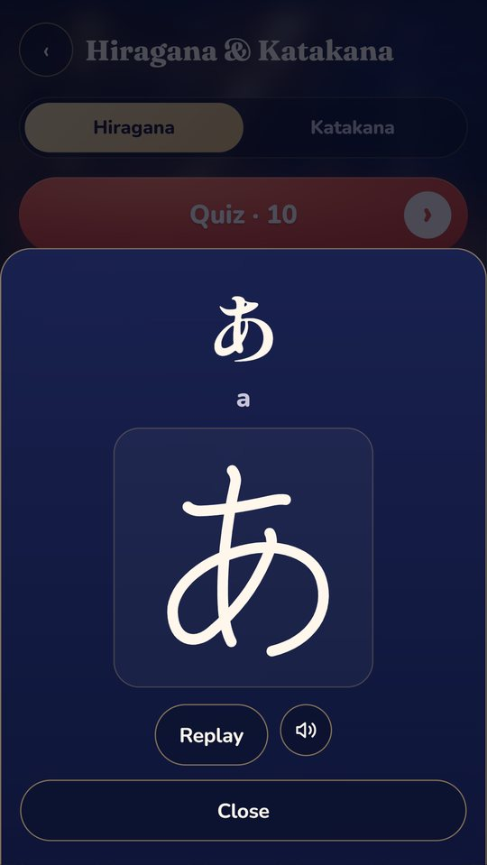
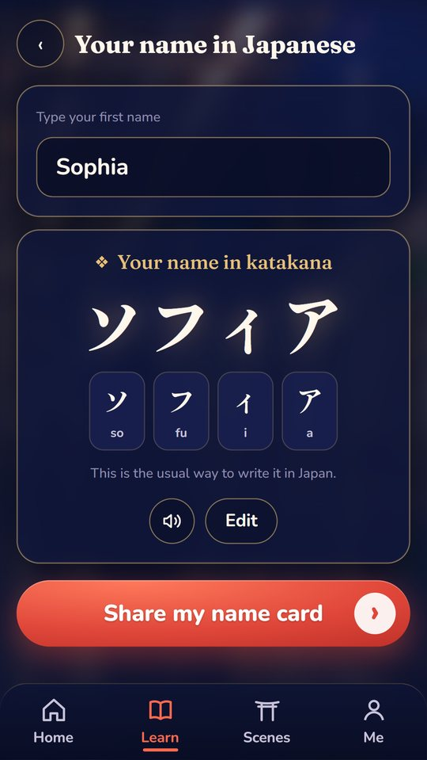
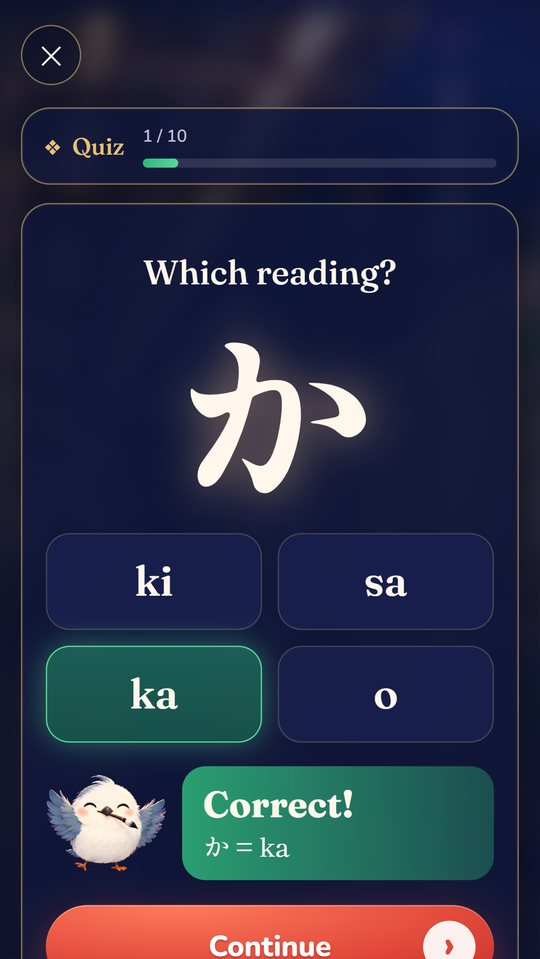

Scenes
Real lines for real moments in Japan
Each Scene is one place in Japan. You get what the staff will say to you and what you can say back, written by a Japanese developer. Kana readings under every line, a short tip on when to use it, and a button to hear it.


Five minutes a day
Take a few days off. Your reviews won't pile up.
Most flashcard apps punish a break: miss a week and 50 reviews turn into 500. Tsukau keeps a daily cap on new words and on reviews. If you miss a few days, the older reviews are spread over the next days.
A few new JLPT N5 words and kanji each day, with spaced repetition.
The day ends when you reach it, so a session stays short.
Coming back after a break feels like a normal day.
Inside the app
Kana, words and your own name
Hiragana and katakana with stroke order, quick quizzes on the ones you miss, and your name written in katakana, letter by letter.




Android testers wanted
Help me test Tsukau on Android
Before a new app can go public on Google Play, it has to be tested by real people for 14 days. If you have an Android phone, it takes three steps.
Join the tester group
Join the Google Group with the Google account you use on your phone.
Open the tester groupOpen the test link
Open it with the same account, tap “Become a tester”, then install Tsukau from Google Play.
Become a testerKeep it installed for 14 days
Open it now and then if you like. Feedback is welcome, but keeping it on your phone is the main help.
If the test link says the app is not available, the group join may not have reached Google Play yet. Wait a few minutes and open it again with the same account.